PHYS 410 - Project 1 - The Toomre Model
This project is comprised of multiple scripts and functions used for simulating galactic collisions using a centered second order finite difference approximation.
Contents
Two Particle System: Convergence Test FDA
To approximate the trajectories of 2 particles in mutual orbit around another we setup an 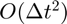 finite difference approximation. The masses of the particles are 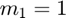 and 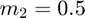 and they are separated by a distance of 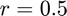. These particles each require a certain initial velocity to ensure they have circular orbits around their center of mass. To determine each initial velocity we must first determine the distance of each particle from the center of mass (COM) of the system. We will assume the COM is located at the origin and that the two particles both lie along the x-axis. The equation for the location of the center of mass is given by
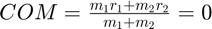.
We will also note that 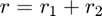. Using these two equations we can derive an expression for 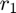 and 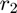.
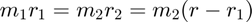
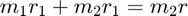
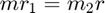
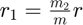
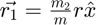
By using the same COM formula but instead substituting 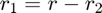 we find that
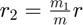
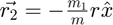
Now that we have the distances of each particle from the COM we can determine their initial velocities necessary for mutual orbit. We simply have to notice that the gravitational acceleration due to the other particle (with G=1) provides the centripetal acceleration about the COM. For 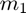 we have
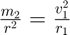
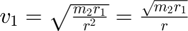
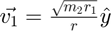
Using the same method for 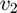 we find that
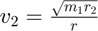
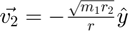
The mutual orbit simulation can now be performed using these initial conditions. We currently possess 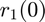, 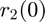, 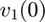, and 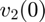. For our second order FDA we require 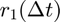 and 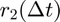: the particle positions at the next iteration. These are determined using the kinematics equation
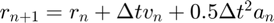
where 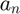 is the gravitational acceleration experienced by the particle which has been determined in the previous steps. For : 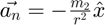 and for 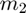: 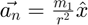.
Using these first two positions we can now approximate the time evolution of this system using the centered second order FDA and setting it equal to the gravitational acceleration.
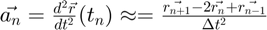
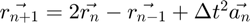
A convergence test was performed to check that there is error in the x-component of the solution for mass . Below are the plots of the trajectories of for 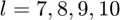.
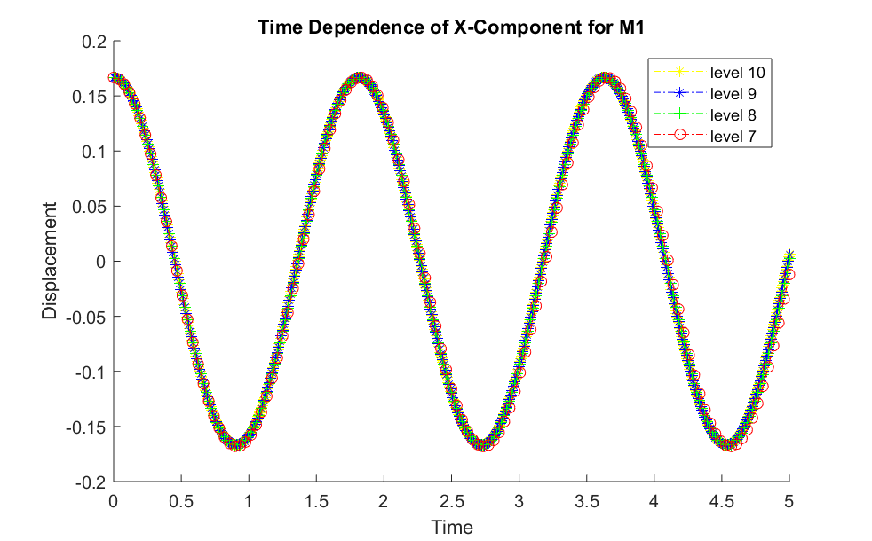
Next we reduce the sample sizes for 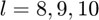 to only the times that 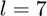 possess so that all solutions contain the same number of samples. This allows the datasets to be subtracted from another to obtain the error. Below is a plot of the difference between the x-component solutions for levels 7-8, 8-9, and 9-10.
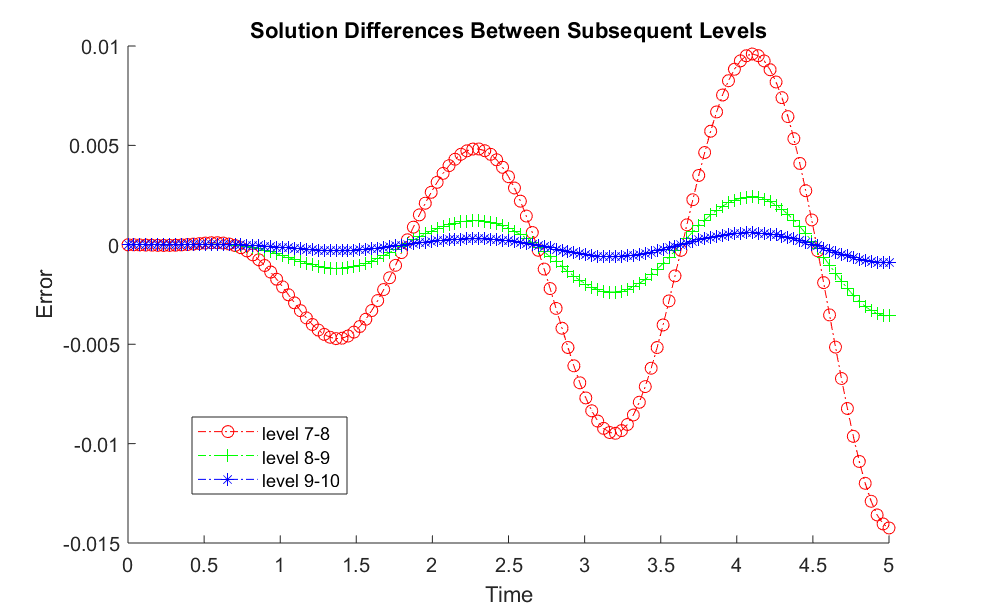
To prove that this FDA exhibits convergence, we show that when \Delta t is divided by 2, the error is divided by 2^2. For level 7, \Delta t is double that for level 8, therefore its error should be 2^2 times greater than that for level 8. These two curves overlap when the error for level 8 is scaled by 2^2. As for level 9, its error will overlap with that of level 7 when scaled by 4^2, since \Delta t is 4 times greater than that of level 9. Below is a plot of these scaled, overlapping curves which proves our convergence.
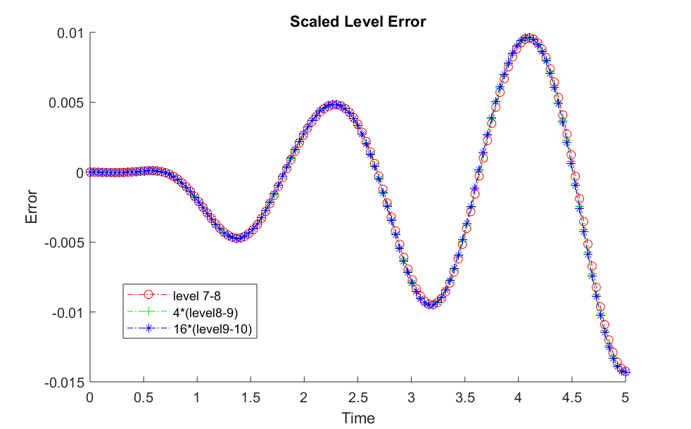
Single Galaxy Dynamics
Before we test galaxy collisions, we ensure that the stars orbiting a single core will remain in orbit. This requires combinations of values for the minimum orbital radius, cores masses and discretization level. A stable galaxy configuration was obtained for 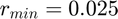, 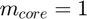 and 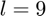.
Plot
Multi-Galaxy Dynamics
To simulate galaxy collisions I created a function called toomre() which takes the arguments: 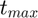, discretization level, core masses, core initial positions, core initial velocities, and the number of stars per core. The number of cores is inferred from the number of core masses provided. The initial positions of the cores are already provided and they are used to calculate the initial positions of the orbiting stars. Each star is given an arbitrary angle and radius (between 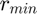 and 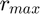) to determine its position relative to its core as well as its absolute position.
To determine subsequent positions, the toomre function calls another function called nbodyaccn to determine the accelerations of each particle due to the gravitational force of each core. Since a second order FDA requires 2 positions, we calculate the position at the second time iteration using the formula
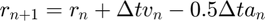